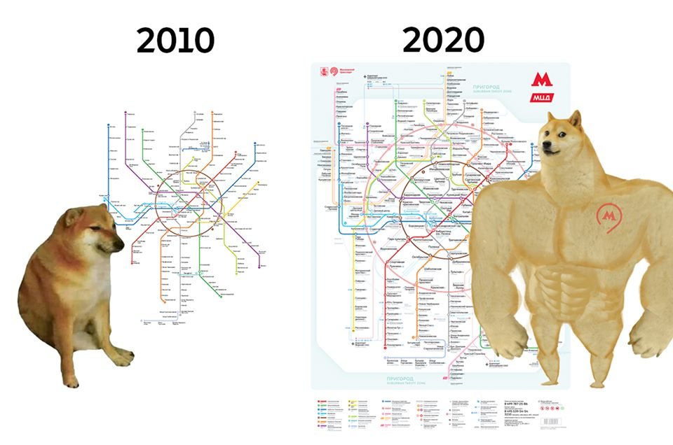

Moszkvában jelenleg 17 metró található (amibe beletartozik a moszkvai egysinű vasút és a "moszkvai központi kör" (Moscow Central Circle(MCC)). Jelenleg 236 állomással rendelkezik 275-el ha beleszámítjuk az egysinű vasutat (6 megálló) és az MCC-t (31 megálló). A moszkvai metróhálózat az elmúlt évtizedben nagyon nagy fejlődésen esett át (ami még most is folytatódik) amit a lentebbi kép reprezentál is.

A metró használatához természetesen kell fizetni ami minden állomáson egy beléptető rendszerrel van ellátva amin érvényesíteni kell a jegyünket. Különböző jegyek elérhetőek de akár a bankkártyánkat is használhatjuk belépésre, de a legelterjetteb a Troika(Тройка) elektronikus kártya ami egyúttal a legolcsóbb módja is a jegyvásárlásnak. Például egy egyszeri jegy ára 57 rubel míg ha Troika kártyával vesszük csak 40 rubel.
De bejutni a metróba nem mindig olyan egyszerű mert minden nagyobb állomáson a rendőrök akik inkább néznek ki katonának mint rendőrnek átkutatnak és ha este 10 órakor megy a hoteljébe egy külföldi ballonkabátban lehet még meg is motozzák (Tapasztalat)